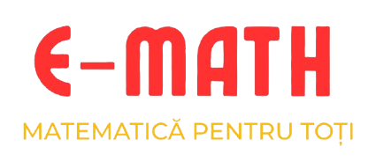

Învață. Exersează. Reușește.
Platformă educațională pentru clasele V–XII. Materiale, exerciții și subiecte de examen într-un singur loc.
Începe învățareaFormule și exerciții organizate pe clase.
Subiecte de Bacalaureat, Evaluare Națională și simulări reale.
Exersează constant și îmbunătățește-ți rezultatele pas cu pas.